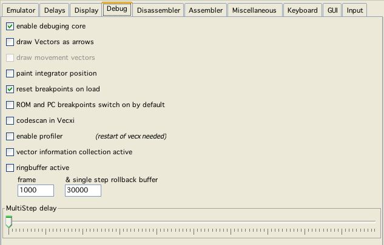

debug config
Enable config debug core
Most of the below described options only work when this is activated. Internally a slightly different emulation is used, that does not test for all the debugging features. Slightly faster.
draw Vectors as arrows
Just one of those not really useful, but cool options. Lets you see in what direction vectors are drawn.
draw movement vectors
Not implemented yet - to get a glimps of what this could look like, play with the "blank delay" option.
paint integrator position
This started as an unneccessary "cool" option - but actually I use it pretty often. With this enabled, vecxi draws a little red circle at the current vector beam postion, this is a great option to help "visualize" debugging (obviously there is a speed impact).
ROM and PC breakpoints switch on by default
Chose whether these breakpoints are set per default on each emulation start (which if you are developing - makes sense).
codescan in Vecxi
If enabled, vecxi while executing marks addresses as "read", "write", "executed" and gives these information to dissi for use. That way dissi has a better chance to discern data from code.
If everthing else is finished in vide, this might be expanded to a more in depth automatic code analyses.
enable profiler
If activated, while emulating vecxi collect additional information, that can be used for profiling. This feature can not be actived on the fly, vecxi must be restarted to use this feature"
Vector information collection active
If use intend to use Vinfi to show specific vector information (e.g. address where a vector came to live), thus must be switched on. Minimal performance gain if switched off.
Ringbuffer active
You only need that for debugging purposes, this basically saves the state of vecx every CPU instruction and thus enables you to take emulation steps back. This option defenitly is one of the speed eaters. If Vide is to slow and you don't intend to debug - switch this off!
There are two different step back buffers.
One single step buffer, which can be configured up to 50000 steps (you have the watch the memory usage yourself!)
One buffer for "large" step backs (30000 instructions per step), this can be configured up to 5000 (see dissi for more information)
MultiStep delay
The delay in milliseconds dissi waits between multi step - steps.